MISION
Ofrecer bachillerato tecnológico y capacitación para el trabajo formando personal calificado, para satisfacer la demanda laboral del sector productivo, impulsando el desarrollo económico del país.
El Instituto Tamaulipeco de Capacitación para el Empleo, conocido como ITACE, es una institución dedicada a la formación de jóvenes mediante una educación que combina conocimientos académicos con preparación técnica.
El ITACE está formado por estudiantes, docentes y personal que trabajan en conjunto para crear un ambiente de aprendizaje, participación y desarrollo. Cada integrante aporta sus conocimientos y habilidades para construir una mejor comunidad.
Ofrecer bachillerato tecnológico y capacitación para el trabajo formando personal calificado, para satisfacer la demanda laboral del sector productivo, impulsando el desarrollo económico del país.
Ser reconocidos como la mejor opción educativa tecnológica, contribuyendo a mejorar la calidad de vida de jóvenes y adultos.
Lealtad:Identificación con la institución y sus ideales.
Honor:Impulsa a comportarse de modo que merezca la consideración y respeto de la gente.
Unidad y Trabajo:Unificación de esfuerzos para obtener excelentes resultados.
Calidad Profesional:Personal calificado en constante formación.
Desarrollo de aplicaciones, páginas web y programas informáticos para resolver problemas mediante la tecnología.
Estudio y desarrollo de componentes electrónicos diminutos, como microchips y semiconductores, esenciales para la tecnología moderna.
Creación de ilustraciones, logotipos y contenido visual digital para comunicar ideas de forma creativa.
Instalación, revisión y reparación de maquinaria y equipos para garantizar su funcionamiento seguro y eficiente.
Organización y control del almacenamiento, transporte y distribución de productos para optimizar los procesos de una empresa.
Desarrollo y aplicación de sistemas capaces de analizar información, reconocer patrones y realizar tareas de manera inteligente.
Protección de sistemas, redes y datos digitales frente a amenazas, ataques informáticos y accesos no autorizados.
Diagnóstico, revisión y reparación de vehículos para conservar su funcionamiento, rendimiento y seguridad.
Diseño, análisis y reparación de circuitos y sistemas electrónicos utilizados en dispositivos y equipos tecnológicos.
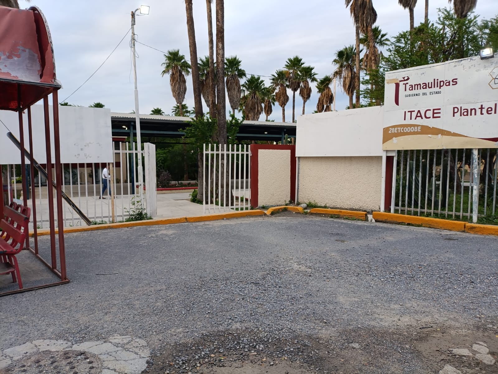
Acceso principal al ITACE, que da la bienvenida a estudiantes, docentes, personal y visitantes.
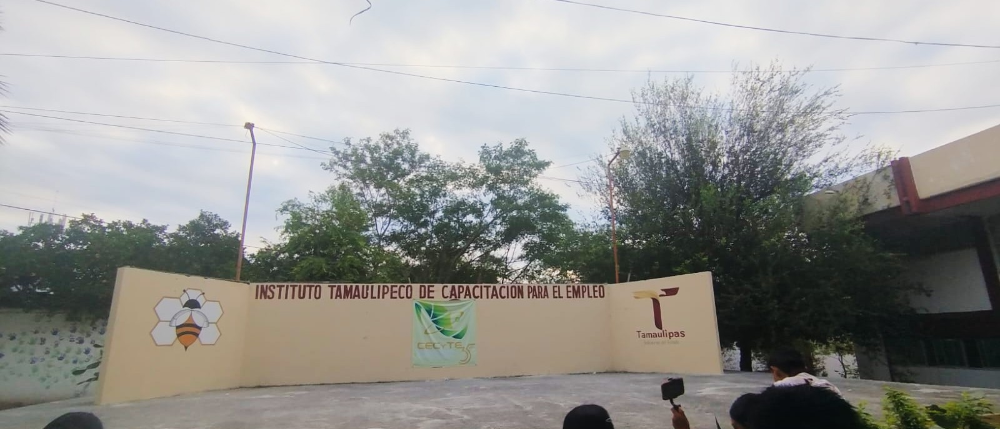
Espacio destinado a presentaciones, expresiones artísticas y actividades culturales que fomentan la participación estudiantil.
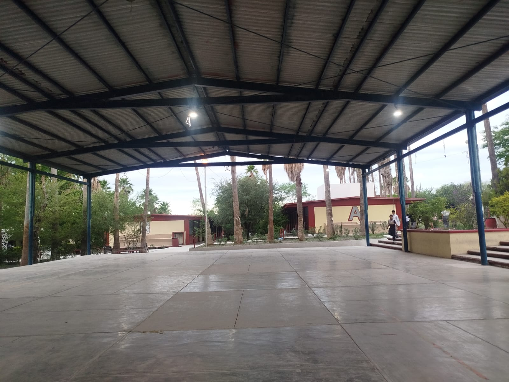
Área abierta que permite realizar reuniones, ceremonias, eventos escolares y diversas actividades de la comunidad educativa.

Punto de control ubicado en el acceso al plantel, destinado a apoyar la seguridad y supervisión de las instalaciones.
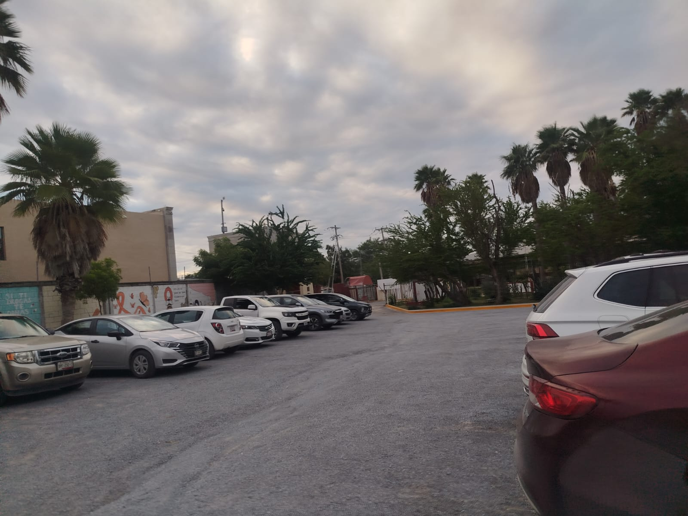
Espacio destinado al estacionamiento de vehículos del personal y de las personas autorizadas para ingresar al plantel.
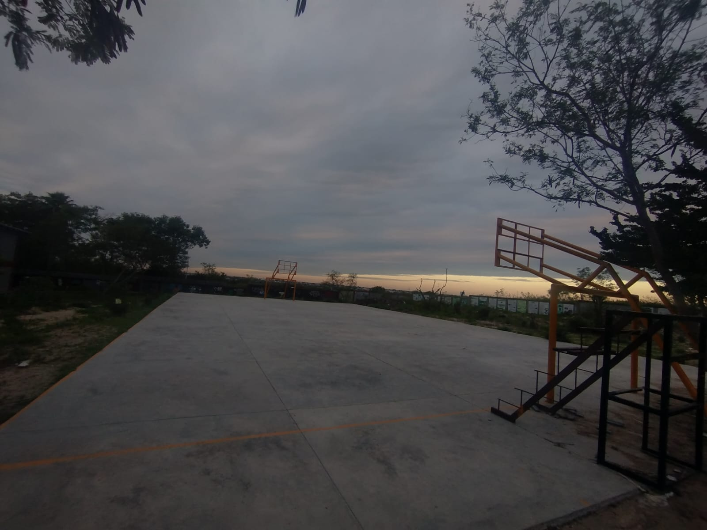
Espacio deportivo destinado a la actividad física, la convivencia y la participación de los estudiantes en actividades recreativas.
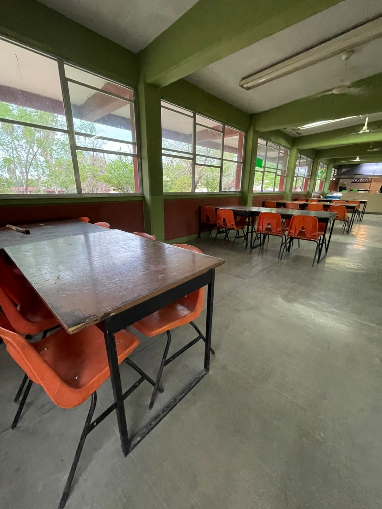
Área destinada al descanso y a la convivencia de los estudiantes durante sus horarios de receso.
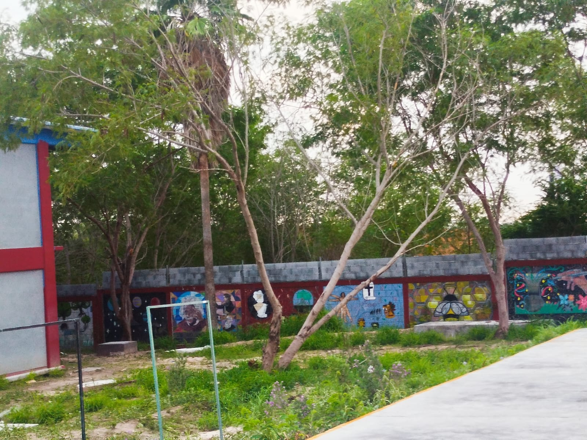
Expresiones artísticas que decoran las instalaciones y aportan color, creatividad e identidad visual a los espacios escolares.
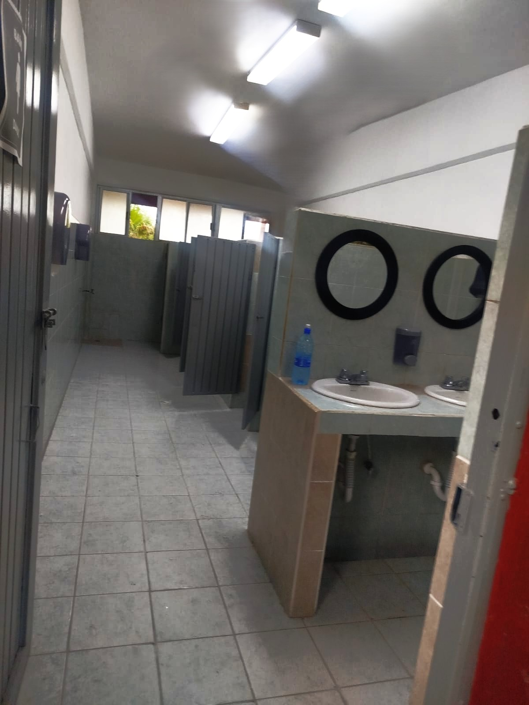
Instalaciones sanitarias destinadas a la higiene y comodidad de los estudiantes, docentes y demás integrantes de la comunidad escolar.

Espacio de convivencia donde los alumnos pueden reunirse, descansar y compartir momentos durante la jornada escolar.
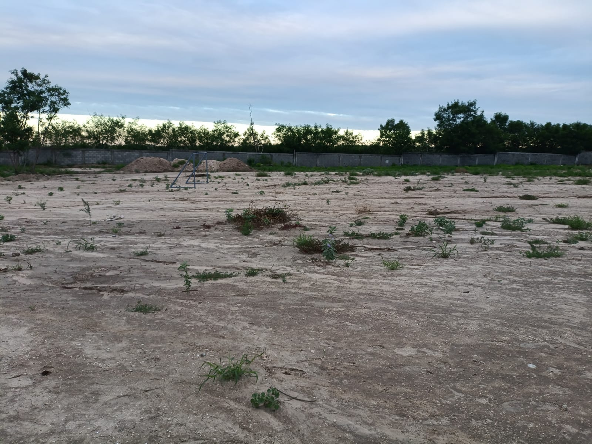
Área abierta del plantel que forma parte de sus espacios exteriores y permite observar las zonas que no cuentan con construcciones.Proximamente, se construira una nueva cancha.
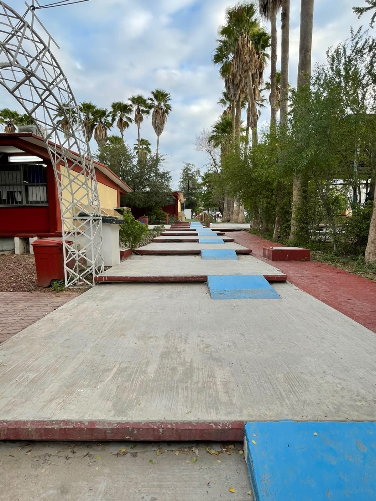
Espacios de circulación que conectan los distintos edificios y salones, facilitando el desplazamiento dentro del plantel.

Espacio dedicado a la expresión corporal y al desarrollo de habilidades artísticas mediante la práctica de diferentes estilos de danza.

Área de aprendizaje práctico donde los estudiantes trabajan con circuitos, componentes y dispositivos electrónicos para desarrollar habilidades técnicas.

Espacio especializado en el aprendizaje sobre el funcionamiento, diagnóstico y mantenimiento de motores de combustión interna.

Áreas destinadas a brindar orientación y apoyo a los estudiantes, así como atención básica ante situaciones relacionadas con su bienestar.

Instalaciones donde se realizan actividades de organización, gestión y atención relacionadas con el funcionamiento del plantel.

Espacios destinados a actividades académicas, presentaciones y al aprendizaje mediante el uso de equipos de cómputo y herramientas digitales.

Áreas administrativas encargadas de la gestión institucional, los trámites escolares, la administración de recursos y la coordinación de las actividades del plantel.

Espacio destinado al almacenamiento y resguardo de los instrumentos, accesorios y utensilios utilizados por los integrantes de la banda de guerra.
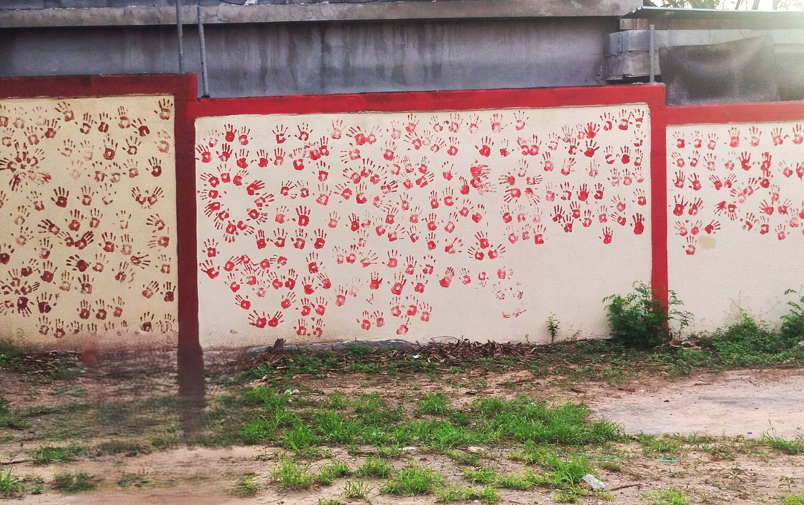
Mural conmemorativo donde los estudiantes dejan la huella de su mano como recuerdo de su generación, creando un símbolo de identidad, pertenencia y unión con el ITACE.
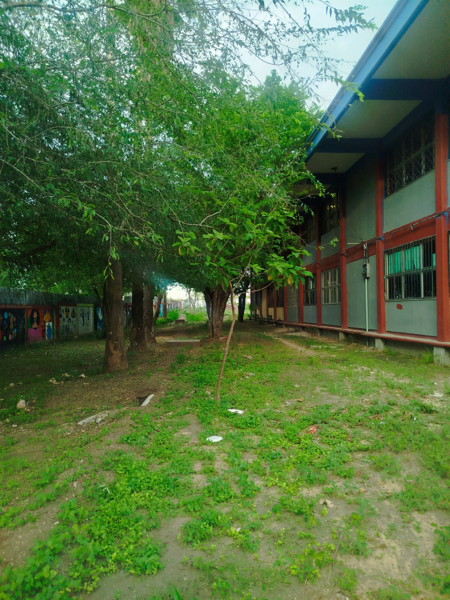
Corredor ubicado en la parte posterior de las aulas, rodeado de árboles que aportan sombra y crean un ambiente natural y agradable dentro del plantel.
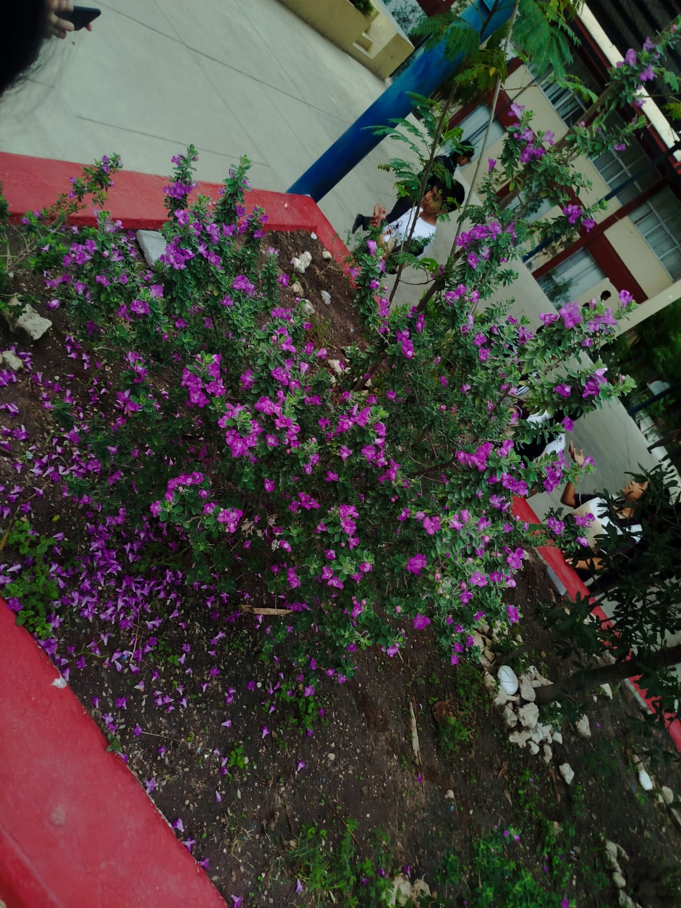
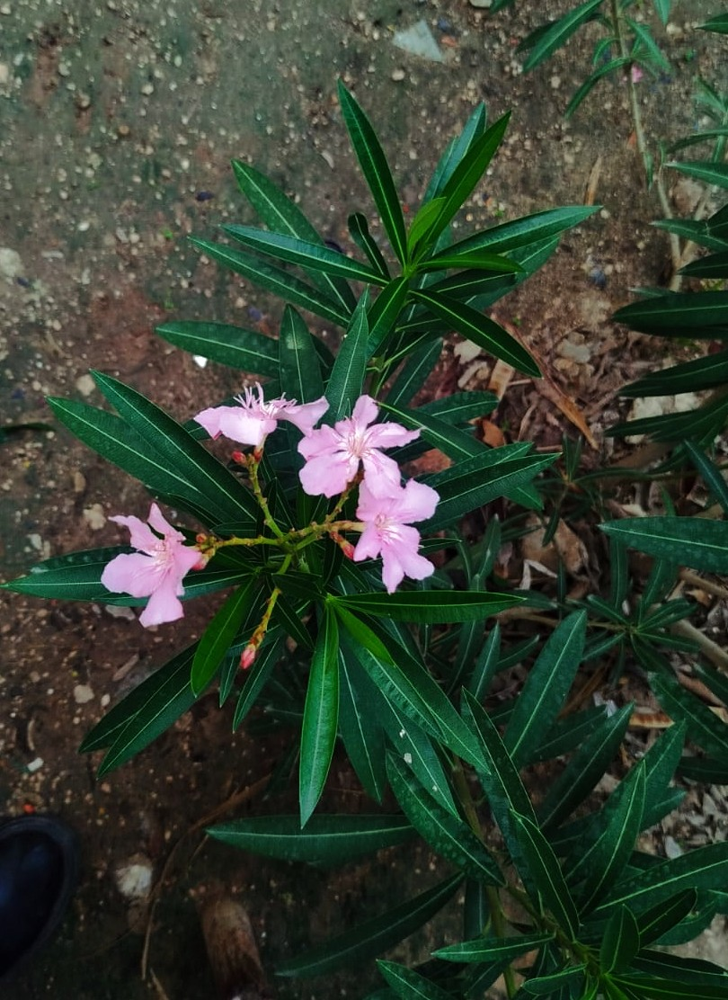
Áreas verdes y elementos naturales que aportan color al entorno escolar y contribuyen a crear un ambiente más agradable.
Somos una comunidad educativa que busca impulsar el desarrollo académico, técnico y personal de nuestros estudiantes. A través de esta página queremos compartir nuestras actividades, proyectos, experiencias y todo aquello que representa al ITACE.
Conoce más sobre nosotros →